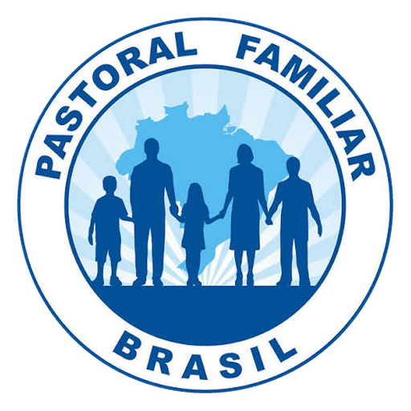

Calendário, avisos, notícias, relatórios e planejamento da pastoral — tudo num só lugar, no celular.
Paróquia, decanato e diocese na mesma agenda, com cores e tempo litúrgico
Busca e filtros: congressos, formações, reuniões, quem criou
Eventos particulares que só você vê e envio para a agenda do celular
Você escolhe quem recebe: paróquia, decanato, diocese ou um grupo
Alertas no celular com os avisos e os eventos de amanhã
Enquetes com resultado na hora e campo para link
Diocese, regional Leste 1, CNBB, Vida e Família e Vatican News
Fotos, eventos e avisos da paróquia misturados às notícias
Curtidas e comentários entre agentes, com termos de uso
Presença, meta de público e casais atendidos
Fotos, ata ou resumo em PDF guardados no evento
Publicar o resultado nas Notícias e montar o álbum do ano
Por paróquia, decanato e diocese, separados por setor
Público esperado e presença real, com avaliação por estrelas
Cadastros incompletos e relatório em PDF para a reunião
Situação da pastoral e agentes por setor, já contados pelo cadastro
Todas as atividades do Diretório da CNBB: fará ou não fará
Datas lançadas no calendário e PDF com os dois símbolos para assinar
Comissão paroquial, decanal e diocesana, e a estrutura nacional
O coordenador põe os nomes dos agentes em cada função
Pronto para imprimir em PDF